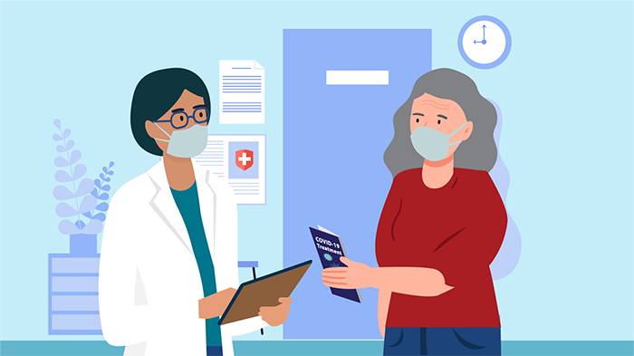

Virusology
Coronavirus
Coronaviruses are a group of related RNA viruses
that cause diseases in mammals and birds. In humans and birds, they
cause respiratory tract infections that can range from mild to
lethal. Mild illnesses in humans include some cases of the common
cold (which is also caused by other viruses, predominantly
rhinoviruses), while more lethal varieties can cause SARS, MERS and
COVID-19, which is causing the ongoing pandemic. In cows and pigs
they cause diarrhea, while in mice they cause hepatitis and
encephalomyelitis.
Coronaviruses constitute the subfamily Orthocoronavirinae, in the family Coronaviridae, order Nidovirales and realm Riboviria.They are enveloped viruses with a positive-sense single-stranded RNA genome and a nucleocapsid of helical symmetry.The genome size of coronaviruses ranges from approximately 26 to 32 kilobases, one of the largest among RNA viruses.They have characteristic club-shaped spikes that project from their surface, which in electron micrographs create an image reminiscent of the stellar corona, from which their name derives.
Coronaviruses constitute the subfamily Orthocoronavirinae, in the family Coronaviridae, order Nidovirales and realm Riboviria.They are enveloped viruses with a positive-sense single-stranded RNA genome and a nucleocapsid of helical symmetry.The genome size of coronaviruses ranges from approximately 26 to 32 kilobases, one of the largest among RNA viruses.They have characteristic club-shaped spikes that project from their surface, which in electron micrographs create an image reminiscent of the stellar corona, from which their name derives.
Symptoms
COVID-19 affects different people in different ways. Most infected
people will develop mild to moderate illness and recover without
hospitalization.
Most common symptoms:
Most common symptoms:
- fever
- cough
- tiredness
- lost of taste of smell
- headache
- aches and pains
- diarrhoea
- a rash on skin, or discolouration of fingers or toes
- red or irritated eyes.
- sore throat
- difficulty breathing or shortness of breath
- loss of speech or mobility, or confusion
- chest pain.

Diagnosis
If you’ve been exposed to the virus or show mild symptoms of
COVID-19, call your doctor for advice about how and when to get
tested. Don’t go to your doctor’s office in person, as you could be
contagious.
You can also access the Centers for Disease Control and Prevention’s (CDC) coronavirus self-checkerTrusted Source to help you decide when to get tested or seek medical care.
You can also access the Centers for Disease Control and Prevention’s (CDC) coronavirus self-checkerTrusted Source to help you decide when to get tested or seek medical care.
Treatment
If you test positive and are more likely to get very sick from
COVID-19, treatments are availableexternal icon that can reduce your
chances of being hospitalized or dying from the disease. Medications
to treat COVID-19 must be prescribed by a healthcare provider and
started as soon as possible after diagnosis to be effective. Contact
a healthcare provider right away to determine if you are eligible
for treatment, even if your symptoms are mild right now.
Don’t delay: Treatment must be started within days of when you first develop symptoms to be effective.
People who are more likely to get very sick include older adults (ages 50 years or more, with risk increasing with age), people who are unvaccinated, and people with certain medical conditions, such as chronic lung disease, heart disease, or a weakened immune system. Being vaccinated makes you much less likely to get very sick. Still, some vaccinated people, especially those ages 65 years or older or who have other risk factors for severe disease, may benefit from treatment if they get COVID-19. A healthcare provider will help decide which treatment, if any, is right for you. Check with your healthcare provider or pharmacist if you are taking other medications to make sure the COVID-19 treatments can be safely taken at the same time.
Don’t delay: Treatment must be started within days of when you first develop symptoms to be effective.
People who are more likely to get very sick include older adults (ages 50 years or more, with risk increasing with age), people who are unvaccinated, and people with certain medical conditions, such as chronic lung disease, heart disease, or a weakened immune system. Being vaccinated makes you much less likely to get very sick. Still, some vaccinated people, especially those ages 65 years or older or who have other risk factors for severe disease, may benefit from treatment if they get COVID-19. A healthcare provider will help decide which treatment, if any, is right for you. Check with your healthcare provider or pharmacist if you are taking other medications to make sure the COVID-19 treatments can be safely taken at the same time.

Causes
Infection with severe acute respiratory syndrome coronavirus 2, or
SARS-CoV-2, causes coronavirus disease 2019 (COVID-19).
The virus that causes COVID-19 spreads easily among people. Data has shown that the COVID-19 virus spreads mainly from person to person among those in close contact. The virus spreads by respiratory droplets released when someone with the virus coughs, sneezes, breathes, sings or talks. These droplets can be inhaled or land in the mouth, nose or eyes of a person nearby.
Sometimes the COVID-19 virus can spread when a person is exposed to very small droplets or aerosols that stay in the air for several minutes or hours — called airborne transmission.
The virus can also spread if you touch a surface with the virus on it and then touch your mouth, nose or eyes. But the risk is low.
The COVID-19 virus can spread from someone who is infected but has no symptoms. This is called asymptomatic transmission. The COVID-19 virus can also spread from someone who is infected but hasn't developed symptoms yet. This is called presymptomatic transmission.
It's possible to get COVID-19 more than once.
When a virus has one or more new mutations it’s called a variant of the original virus. The omicron (B.1.1.529) variant spreads more easily than the original virus that causes COVID-19 and the delta variant. However, omicron appears to cause less severe disease. People who are fully vaccinated can get breakthrough infections and spread the virus to others. But the COVID-19 vaccines are effective at preventing severe illness. This variant also reduces the effectiveness of some monoclonal antibody treatments. Omicron has a few major offshoots (sublineages), including BA.5 and BA.2.12.1. BA.5 made up about 88% of COVID-19 infections that had genetic sequencing in the U.S. in August, 2022, according to the CDC.
In April, the CDC downgraded the delta variant from a variant of concern to a variant being monitored. This means that the delta variant isn’t currently considered a major public health threat in the U.S.
The virus that causes COVID-19 spreads easily among people. Data has shown that the COVID-19 virus spreads mainly from person to person among those in close contact. The virus spreads by respiratory droplets released when someone with the virus coughs, sneezes, breathes, sings or talks. These droplets can be inhaled or land in the mouth, nose or eyes of a person nearby.
Sometimes the COVID-19 virus can spread when a person is exposed to very small droplets or aerosols that stay in the air for several minutes or hours — called airborne transmission.
The virus can also spread if you touch a surface with the virus on it and then touch your mouth, nose or eyes. But the risk is low.
The COVID-19 virus can spread from someone who is infected but has no symptoms. This is called asymptomatic transmission. The COVID-19 virus can also spread from someone who is infected but hasn't developed symptoms yet. This is called presymptomatic transmission.
It's possible to get COVID-19 more than once.
When a virus has one or more new mutations it’s called a variant of the original virus. The omicron (B.1.1.529) variant spreads more easily than the original virus that causes COVID-19 and the delta variant. However, omicron appears to cause less severe disease. People who are fully vaccinated can get breakthrough infections and spread the virus to others. But the COVID-19 vaccines are effective at preventing severe illness. This variant also reduces the effectiveness of some monoclonal antibody treatments. Omicron has a few major offshoots (sublineages), including BA.5 and BA.2.12.1. BA.5 made up about 88% of COVID-19 infections that had genetic sequencing in the U.S. in August, 2022, according to the CDC.
In April, the CDC downgraded the delta variant from a variant of concern to a variant being monitored. This means that the delta variant isn’t currently considered a major public health threat in the U.S.
Preventions
Check with your local health authority for the most relevant
guidance for your region.
To prevent the spread of COVID-19:
Masks
Properly fitted masks can help prevent the spread of the virus from the person wearing the mask to others. Masks alone do not protect against COVID-19, and should be combined with physical distancing and hand hygiene. Follow the advice provided by your local health authority.
To prevent the spread of COVID-19:
- Maintain a safe distance from others (at least 1 metre), even if they don’t appear to be sick.
- Wear a mask in public, especially indoors or when physical distancing is not possible.
- Choose open, well-ventilated spaces over closed ones. Open a window if indoors.
- Clean your hands often. Use soap and water, or an alcohol-based hand rub.
- Get vaccinated when it’s your turn. Follow local guidance about vaccination.
- Cover your nose and mouth with your bent elbow or a tissue when you cough or sneeze.
- Stay home if you feel unwell.
Masks
Properly fitted masks can help prevent the spread of the virus from the person wearing the mask to others. Masks alone do not protect against COVID-19, and should be combined with physical distancing and hand hygiene. Follow the advice provided by your local health authority.